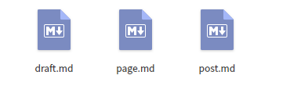

<!DOCTYPE html>
<html lang class="loading">
<head><meta name="generator" content="Hexo 3.8.0">
    <meta charset="UTF-8">
    <meta http-equiv="X-UA-Compatible" content="IE=edge,chrome=1">
    <meta name="viewport" content="width=device-width, minimum-scale=1.0, maximum-scale=1.0, user-scalable=no">
    <title>hexo自定义新文章的初始化模板 - Linco</title>
    <meta name="apple-mobile-web-app-capable" content="yes">
    <meta name="apple-mobile-web-app-status-bar-style" content="black-translucent">
    <meta name="google" content="notranslate">
    <meta name="keywords" content="Linco, Blog,"> 
    <meta name="description" content="Linco这个博客是用hexo框架构建的, 创建文章的时候 hexo new &amp;lt;title&amp;gt; 就建立了相关文件. 这样正文模板只有简单的标题和日期两行, 博客主题支持的其他字段要自己填入,"> 
    <meta name="author" content="Linco"> 
    <link rel="alternative" href="atom.xml" title="Linco" type="application/atom+xml"> 
    <link rel="icon" href="/img/icon.png"> 
    <link rel="stylesheet" href="//cdn.jsdelivr.net/npm/gitalk@1/dist/gitalk.css">
    <link rel="stylesheet" href="/css/diaspora.css">

</head>
</html>
<body class="loading">
    <span id="config-title" style="display:none">Linco</span>
    <div id="loader"></div>
    <div id="single">
    <div id="top" style="display: block;">
    <div class="bar" style="width: 0;"></div>
    <a class="icon-home image-icon" href="javascript:;" data-url></a>
    <div title="播放/暂停" class="icon-play"></div>
    <h3 class="subtitle">hexo自定义新文章的初始化模板</h3>
    <div class="social">
        <!--<div class="like-icon">-->
            <!--<a href="javascript:;" class="likeThis active"><span class="icon-like"></span><span class="count">76</span></a>-->
        <!--</div>-->
        <div>
            <div class="share">
                <a title="获取二维码" class="icon-scan" href="javascript:;"></a>
            </div>
            <div id="qr"></div>
        </div>
    </div>
    <div class="scrollbar"></div>
</div>

    <div class="section">
        <div class="article">
    <div class="main">
        <h1 class="title">hexo自定义新文章的初始化模板</h1>
        <div class="stuff">
            <span>五月 04, 2019</span>
            
  <ul class="post-tags-list"><li class="post-tags-list-item"><a class="post-tags-list-link" href="/tags/hexo/">hexo</a></li></ul>


        </div>
        <div class="content markdown">
            <h3 id="Linco"><a href="#Linco" class="headerlink" title="Linco"></a>Linco</h3><p>这个博客是用hexo框架构建的, 创建文章的时候 <code>hexo new &lt;title&gt;</code> 就建立了相关文件. 这样正文模板只有简单的标题和日期两行, 博客主题支持的其他字段要自己填入. 每次都自己打显然是很瓜皮的行为, 从其他地方CV又不够优雅, 怎么办呢<br>我们看到, Hexo主目录下面有个 scaffolds 文件夹, 里面装的是 “原型” 文件, 什么原型呢? </p>
<p>打开看到这些</p>
<p></p>
<p>没错,就是各种 layout 的底板</p>
<p>​    </p>
<p>我们建立的文章属于 post, 所以可以直接修改 post 文件</p>
<figure class="highlight yaml"><table><tr><td class="gutter"><pre><span class="line">1</span><br><span class="line">2</span><br><span class="line">3</span><br><span class="line">4</span><br><span class="line">5</span><br><span class="line">6</span><br><span class="line">7</span><br><span class="line">8</span><br><span class="line">9</span><br><span class="line">10</span><br><span class="line">11</span><br></pre></td><td class="code"><pre><span class="line"><span class="meta">---</span></span><br><span class="line"><span class="attr">title:</span> <span class="string">&#123;&#123;</span> <span class="string">title</span> <span class="string">&#125;&#125;</span></span><br><span class="line"><span class="attr">date:</span> <span class="string">&#123;&#123;</span> <span class="string">date</span> <span class="string">&#125;&#125;</span></span><br><span class="line"></span><br><span class="line"><span class="attr">categories:</span> </span><br><span class="line"><span class="bullet">    -</span> <span class="string">未归类</span></span><br><span class="line"><span class="attr">tags:</span> </span><br><span class="line"><span class="attr">mp3:</span> <span class="string">/music/default_bgm.mp3</span></span><br><span class="line"><span class="attr">cover:</span> <span class="string">/cover/default_cover.jpg</span></span><br><span class="line"></span><br><span class="line"><span class="meta">---</span></span><br></pre></td></tr></table></figure>
<p>这些参数只适用于我当前的博客环境, 仅供参考</p>
<p>​    </p>
<p>创建新文章的选择原型</p>
<p><code>hexo new 测试后删除</code></p>
<p>​    </p>
<p>这时候打开看到新文章配置属性已经是我们想要的了. </p>
<figure class="highlight yaml"><table><tr><td class="gutter"><pre><span class="line">1</span><br><span class="line">2</span><br><span class="line">3</span><br><span class="line">4</span><br><span class="line">5</span><br><span class="line">6</span><br><span class="line">7</span><br><span class="line">8</span><br><span class="line">9</span><br></pre></td><td class="code"><pre><span class="line"><span class="meta">---</span></span><br><span class="line"><span class="attr">title:</span> <span class="string">测试后删除</span></span><br><span class="line"><span class="attr">categories:</span></span><br><span class="line"><span class="bullet">  -</span> <span class="string">未归类</span></span><br><span class="line"><span class="attr">mp3:</span> <span class="string">/music/default_bgm.mp3</span></span><br><span class="line"><span class="attr">cover:</span> <span class="string">/cover/default_cover.jpg</span></span><br><span class="line"><span class="attr">date:</span> <span class="number">2019</span><span class="bullet">-05</span><span class="bullet">-16</span> <span class="number">09</span><span class="string">:28:35</span></span><br><span class="line"><span class="attr">tags:</span></span><br><span class="line"><span class="meta">---</span></span><br></pre></td></tr></table></figure>
<p>​    </p>
<p>什么, 你说顺序… 还是去看医生治好强迫症吧</p>

            <!--[if lt IE 9]><script>document.createElement('audio');</script><![endif]-->
            <audio id="audio" loop="1" preload="auto" controls="controls" data-autoplay="true">
                <source type="audio/mpeg" src="/music/岁月神偷 钢琴.mp3">
            </audio>
            
        </div>
        
    <div id="gitalk-container" class="comment link" data-ae="false" data-ci="978518cc439cd352dd0b" data-cs="2d89825e7db6df72d065714d6b4ac1ce1829b14e" data-r="LincoXiaoQ.github.io" data-o="LincoXiaoQ" data-a="LincoXiaoQ" data-d="false">查看评论</div>


    </div>
    
</div>


    </div>
</div>
</body>
<script src="//cdn.jsdelivr.net/npm/gitalk@1/dist/gitalk.min.js"></script>
<script src="//lib.baomitu.com/jquery/1.8.3/jquery.min.js"></script>
<script src="/js/plugin.js"></script>
<script src="/js/diaspora.js"></script>
<link rel="stylesheet" href="/photoswipe/photoswipe.css">
<link rel="stylesheet" href="/photoswipe/default-skin/default-skin.css">
<script src="/photoswipe/photoswipe.min.js"></script>
<script src="/photoswipe/photoswipe-ui-default.min.js"></script>

<!-- Root element of PhotoSwipe. Must have class pswp. -->
<div class="pswp" tabindex="-1" role="dialog" aria-hidden="true">
    <!-- Background of PhotoSwipe. 
         It's a separate element as animating opacity is faster than rgba(). -->
    <div class="pswp__bg"></div>
    <!-- Slides wrapper with overflow:hidden. -->
    <div class="pswp__scroll-wrap">
        <!-- Container that holds slides. 
            PhotoSwipe keeps only 3 of them in the DOM to save memory.
            Don't modify these 3 pswp__item elements, data is added later on. -->
        <div class="pswp__container">
            <div class="pswp__item"></div>
            <div class="pswp__item"></div>
            <div class="pswp__item"></div>
        </div>
        <!-- Default (PhotoSwipeUI_Default) interface on top of sliding area. Can be changed. -->
        <div class="pswp__ui pswp__ui--hidden">
            <div class="pswp__top-bar">
                <!--  Controls are self-explanatory. Order can be changed. -->
                <div class="pswp__counter"></div>
                <button class="pswp__button pswp__button--close" title="Close (Esc)"></button>
                <button class="pswp__button pswp__button--share" title="Share"></button>
                <button class="pswp__button pswp__button--fs" title="Toggle fullscreen"></button>
                <button class="pswp__button pswp__button--zoom" title="Zoom in/out"></button>
                <!-- Preloader demo http://codepen.io/dimsemenov/pen/yyBWoR -->
                <!-- element will get class pswp__preloader--active when preloader is running -->
                <div class="pswp__preloader">
                    <div class="pswp__preloader__icn">
                      <div class="pswp__preloader__cut">
                        <div class="pswp__preloader__donut"></div>
                      </div>
                    </div>
                </div>
            </div>
            <div class="pswp__share-modal pswp__share-modal--hidden pswp__single-tap">
                <div class="pswp__share-tooltip"></div> 
            </div>
            <button class="pswp__button pswp__button--arrow--left" title="Previous (arrow left)">
            </button>
            <button class="pswp__button pswp__button--arrow--right" title="Next (arrow right)">
            </button>
            <div class="pswp__caption">
                <div class="pswp__caption__center"></div>
            </div>
        </div>
    </div>
</div>


</html>
